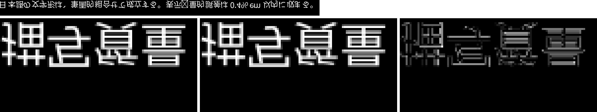

CJK Web フォント圧縮を試す
必要な文字を選ぶ配信方式と、輪郭の精度を調整する GLC を組み合わせる
Interactive demo · Text payload estimates, visual error, and combined measurements
文章を入力して転送量の目安を確認し、格子幅を動かして容量と描画の変化を比べられます。 ここで新たなフォント圧縮・描画測定は行いません。入力した文章の処理はブラウザ内で完結します。
1. あなたの文章と推定転送量Your text · Estimated payload
| 方式 | 転送量（推定 / 固定参考値） |
|---|---|
| 完全一致サブセット / stock WOFF2 推定 | 推定 — |
| 完全一致サブセット + GLC g=8 推定 | 推定 — |
| base500 + 差分 / cold 推定 | 推定 — |
| base500 + 差分 / warm 推定 | 推定 — |
| base500 + 差分 + GLC g=8 / cold 推定 | 推定 — |
| base500 + 差分 + GLC g=8 / warm 推定 | 推定 — |
| 全体フォント WOFF2 実測・固定参考 | 2,249.0 KiB（2,303,000 B） |
| Google Fonts 方式の中央値 実測・固定参考 | 509.2 KiB（521,392 B） |
推定モデル: 実測アンカーの正の点の間で、文字数に対して log(バイト数) を線形補間し、 測定範囲外は端点に固定します（空の入力は0バイト、差分には仮想点「0文字・0バイト」を加えて最初の実測点まで線形補間）。
文字の形・組合せ、フォントの収録範囲、極小サブセットの固定費用は再現していないため、入力文そのものの圧縮結果ではありません。 文字数は Unicode コードポイント単位で数えます。
cold は共有ベース全体と差分の合計、warm はベースがキャッシュ済みの場合の差分のみ。 差分0文字は0バイトで、cold にはベースの取得費用が残ります。
2. 許容誤差と見た目Epsilon slider · Size and rendering error
GLC は輪郭座標を格子に丸めます。格子幅 g を大きくすると、容量と描画差分がどう変わるかを確認できます。
最大座標誤差 ε = g / (2 × UPM) × 100%。UPM = 1000、g=0 は基準です。
- ε（em 比）
- —
- 全体 WOFF2
- —
- 全体サイズの基準比
- —
- 3,000文字サブセット
- —
- PSNR / 24px
- —
- 変化した画素 / 24px
- —

数値は Noto Sans JP の各スイープの実測値です。GLC の前処理にはテーブル整理なども含まれ、 容量変化のすべてが座標の丸めだけに由来するわけではありません。
3. 配信方式 × GLC の実測結果Combined results · Measured medians
同じ日本語ページ集合で、必要な文字の選び方と GLC を組み合わせた結果です。 全体フォントの行は固定の参考サイズで、それ以外はページ別転送量の中央値です。
| 方式 | 中央値 / 参考値 (KiB) | Google Fonts 比削減率 |
|---|---|---|
| Google Fonts 方式 | 509.2 | 0.0% |
| 完全一致サブセット / stock WOFF2 | 102.5 | 79.9% |
| 完全一致サブセット + GLC g=4 | 95.6 | 81.2% |
| 完全一致サブセット + GLC g=8 | 88.6 | 82.6% |
| base500 + 差分 / cold | 136.8 | 73.1% |
| base500 + 差分 / warm | 23.0 | 95.5% |
| base500 + 差分 + GLC g=8 / cold | 117.8 | 76.9% |
| base500 + 差分 + GLC g=8 / warm | 19.3 | 96.2% |
| 全体フォント WOFF2（固定参考値） | 2,249.0 | -341.7% |
削減率 = (1 − 各中央値または参考値 / Google Fonts 方式の中央値) × 100%。負の値は増加を表します。 中央値はページ別の比率の中央値とは一致しません。cold / warm のキャッシュ条件は上記と同じです。
同じページの完全一致サブセットに GLC を加えたときの削減率の中央値は、g=4 で 7.6% 削減、g=8 で 15.2% 削減です（表の中央値同士の比とは異なります）。
共有ベース500文字への GLC g=8 の適用は 13.4% 削減で、warm ではベースを取得済みと仮定するため、その転送量を数えません。
アンカーサブセットの GLC g=8 による削減率は 12.5〜19.8%（正が削減）で、文字数・文字構成に依存するため、任意の文章で同じ効果を保証しません。